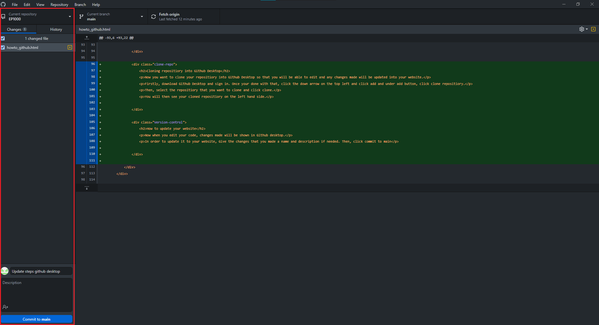
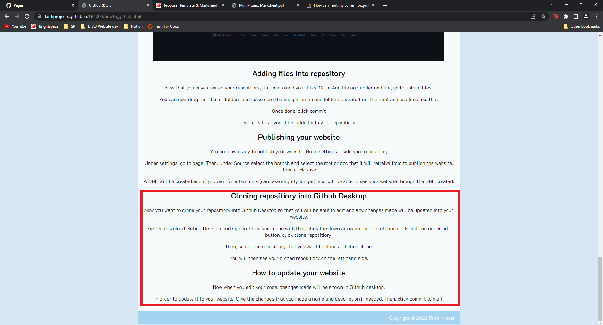

GitHub & Git
What is GitHub?
From Rodney Dorville's slides, GitHub is a cloud-based service that allows developers to store and manage their code/work, as well as track changes to their code/work. It also allows you to host publicly accesible static web-pages. Provider of Internet hosting for software development.
What is Git?
A software for tracking changes in any set of files. A Version Control system able to handle small to large scale projects with speed and efficiency.
Diagram of how Git works
From Rodney Dorville's Slides
Lets Get Started!
First you need to have an account. So search up github.com and once your there you will see this page:

Then, Click on the Sign up button on the top right corner and follow the instructions given.
Creating a Repository
Congrats! You have finally made an account now its time to create your repository. Once you have logged in, go to your profile.

Inside your profile this is what you would see, from there click on Repositories.

Once your in the repository page, click on New to create a new repository.

- You can name your Repository name and Description to anything you want and make sure it is put to public.
- For Initialize this repository with: Tick the Add a README file and Choose MIT Licence. Leave Add .gitignore to none.
- Once your all done, Click Create Repository.

And There you go, you have made your Repository!

Adding files into repository
Now that you have created your repositiory, its time to add your files. Go to Add file and under add file, go to upload files.
You can now drag the files or folders and make sure the images are in one folder separate from the html and css files like this:
Once done, click commit
You now have your files added into your repositiory
Publishing your website
You are now ready to publish your website, Go to settings inside your repositiory
Under settings, go to page. Then, Under Source select the branch and select the root or doc that it will retreive from to publish the website. Then click save
A URL will be created and if you wait for a few mins (can take slightly longer), you will be able to see your website through the URL created.
Cloning repositiory into Github Desktop
Now you want to clone your repositiory into Github Desktop so that you will be able to edit and any changes made will be updated into your website.
Firstly, download Github Desktop and sign in. Once your done with that, click the down arrow on the top left and click add and under add button, click clone repositiory.
Then, select the repositiory that you want to clone and click clone.
You will then see your cloned repositiory on the left hand side.
You can also create a new Repository in Github Desktop with the same steps as how you created in Github Website.
How to update your website
Now when you edit your code, changes made will be shown in Github desktop.
In order to update it to your website, Give the changes that you made a name and description. Then, click commit to main.
Then after just push up by clicking the push origin button. Your website should be updated.
And there you go, you have learnt how to use Github!
